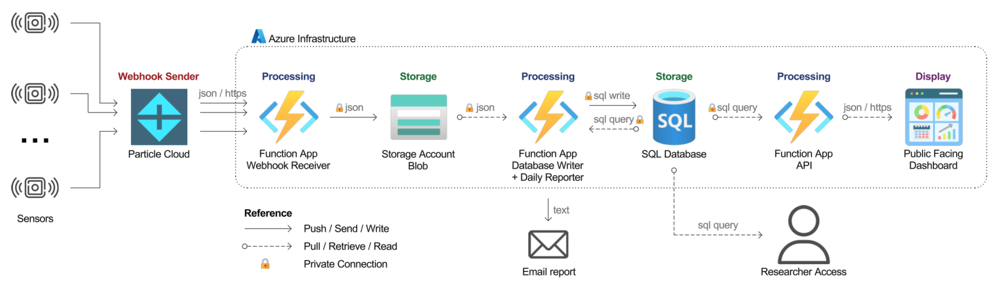

Data Flow
Brief paragraph explaining the contents of this section
Architecture Overview

Data Flow
 Particle Sensors
→
Particle Cloud
Particle Sensors
→
Particle Cloud
Sensors collect temperature, relative humidity, and noise readings every minute. Data is batched and transmitted every 15 minutes via cellular connection.
Data format: Comma-separated string containing timestamp, Box ID, and 15 sets of raw readings (T, RH, Noise).
Example message:
Data transformations needed: Temperature and humidity divide by 100, noise applies formula. See Particle Platform Reference for complete specifications.
Particle Cloud → Webhook Receiver
Particle Cloud wraps the sensor message in a JSON payload and sends it to the Webhook Receiver via HTTP POST request. The Webhook Receiver exposes an HTTP endpoint. If the function is unavailable or unreachable, Particle Cloud retries briefly before data is lost.
Data format: JSON object containing:
{
"event": "<event-name>",
"data": ",19,6,6,17,34,2483,5480,6389,...",
"published_at": "2025-06-24T14:39:44.391Z",
"coreid": "<core-id>",
"userid": "<user-id>",
"fw_version": "<fw_version>",
"public": false
}
The data field contains the raw sensor message. Other fields provide metadata used for validation and duplicate detection.
For webhook configuration see Particle Platform Reference. For endpoint configuration see Function Apps Reference.
Webhook Receiver
→
 Blob Storage
Blob Storage
The Webhook Receiver is the entry point to the Azure infrastructure. After validating incoming data, it detects whether the message contains environmental readings, startup logs, or error messages, then parses accordingly. For environmental data, it extracts the box_id, initial timestamp for the batch, and raw triplets of data per minute (T, RH, Noise). The parsed data along with the original raw string are written to the environment/incoming/ folder in Blob Storage for database processing.
Data format: JSON file with parsed environmental data:
{
"datatype": "environment",
"raw": ",19,6,6,17,34,2483,5480,6389,...",
"parsed_at": "2025-06-24T14:39:45.123456+00:00",
"parser_version": 1.0,
"box_id": "19",
"timestamp": "2025-06-06T17:34:00+00:00",
"readings": [
{"T": 2483, "RH": 5480, "Noise": 6389},
{"T": 2482, "RH": 5483, "Noise": 5181},
...
],
"event": "<event-name>",
"published_at": "2025-06-24T14:39:44.391Z",
"coreid": "<core-id>"
}
Each blob represents one webhook delivery containing 15 minutes of a single sensor readings.
For parsing logic and validation checks see Function Apps Reference. For blob organization see Blob Storage Reference.
 Blob Storage
⇢
Database Writer
→
Blob Storage
⇢
Database Writer
→
 SQL Database
SQL Database
Database Writer function triggers automatically every 30 minutes. It scans the environment/incoming/ folder and retrieves all unprocessed blobs. After processing, blobs are moved to archived/ folder, ensuring only new data remains in incoming/.
The function processes all sensor data collected during that period in a single batch. For each blob, it calculates individual timestamps for each reading (adding 1 minute increments from the batch start time), converts raw values to final units (temperature to Fahrenheit, humidity to percentage, noise to dB), and computes heat index using the NWS equation.
Data format: Batch of records prepared for database insertion:
[
{
"box_id": "19",
"deployment_id": 42,
"timestamp": "2025-06-06T17:34:00+00:00",
"temperature": 76.69, # Converted to Fahrenheit
"humidity": 54.80, # Converted to percentage
"heat_index": 77.2, # Calculated from T and RH
"noise": 59.90, # Converted to dB
"quality_ok": true,
"source_blob": "2025-06-06_17-34_box-19"
},
...
]
Records are written to the database using batch INSERT statements:
INSERT INTO nu_readings (
deployment_id, box_id, timestamp,
temperature, humidity, heat_index, noise,
quality_ok, source_blob
)
VALUES (?, ?, ?, ?, ?, ?, ?, ?, ?)
For processing logic and deduplication see Function Apps Reference. For schema details see Complete Schema Reference.
 SQL Database
⇢
API
→
SQL Database
⇢
API
→
 Public Facing Dashboard
Public Facing Dashboard
Dashboard sends HTTP requests to the API with query parameters specifying sensor (deployment_id), metric (temperature, humidity, heat_index, or noise), time range (start_date, end_date), and aggregation level (1min, 1hour, or 1day).
The API validates parameters and queries the database. Based on the aggregation level, it either retrieves raw 1-minute readings or calculates hourly/daily averages using SQL aggregation functions.
Query example for hourly aggregated data:
SELECT
DATEADD(HOUR, DATEDIFF(HOUR, 0, timestamp), 0) AS timestamp,
AVG(temperature) AS temperature
FROM nu_readings
WHERE deployment_id = 19
AND timestamp >= '2025-06-06T17:00:00'
AND timestamp <= '2025-06-06T18:00:00'
AND temperature IS NOT NULL
GROUP BY DATEADD(HOUR, DATEDIFF(HOUR, 0, timestamp), 0)
ORDER BY timestamp
The API converts timestamps from UTC to US/Eastern timezone and formats the response as JSON:
{
"deployment_id": 19,
"metric": "temperature",
"readings": [
{"timestamp": "2025-06-06T13:34:00-04:00", "temperature": 76.69},
{"timestamp": "2025-06-06T13:35:00-04:00", "temperature": 76.71},
...
]
}
The dashboard receives the data and renders interactive time-series visualizations using Plotly.js.
For API endpoint details see API Endpoints Reference. For dashboard code see Static Web App Reference.
 SQL Database
⇢
Daily Reporter
SQL Database
⇢
Daily Reporter
Daily Reporter function triggers once per day on a schedule. It queries the database to collect operational statistics from the previous 24-hour period, including total records written, sensor performance metrics, and data gaps.
The function analyzes sensor health by calculating the percentage of expected data received for each sensor and identifying those with no data or underperforming (< 85% of expected readings). It also tracks the largest data gap for each sensor and lists uninstalled sensors.
Data format: Email report with operational summary:
SENSOR DATA DAILY REPORT
Report Date: 2026-02-03 (Eastern Time)
Report Period: 2026-02-03T05:00:00+00:00 to 2026-02-04T05:00:00+00:00 (UTC)
=== SUMMARY ===
Installed Sensors: 53/55
Total Records Written: 41,565
Sensors with no data: 16
Sensors Underperforming (< 85.0%): 14
Sensors Performing OK (≥ 85.0%): 23
=== SENSORS WITH NO DATA (Installed) ===
02, 08, 09, ...
=== SENSORS UNDERPERFORMING (< 85.0% EXPECTED DATA) ===
• Sensor 04: 30.2% | Largest gap: 4.5 hours
• Sensor 05: 46.9% | Largest gap: 12.0 hours
• Sensor 06: 55.2% | Largest gap: 10.5 hours
...
=== UNINSTALLED SENSORS ===
14, 42
The email is sent to the research team for monitoring system health and identifying sensor issues requiring attention.
For function code and email configuration see Function Apps Reference.